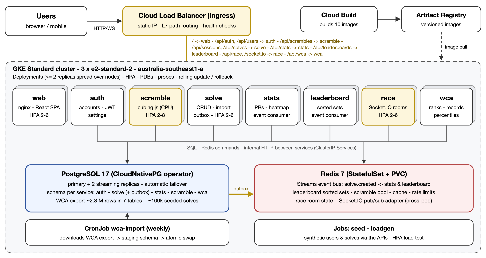

Background. Speedcubing is the sport of solving the Rubik's Cube and related puzzles as fast as possible. The World Cube Association (WCA) lists over 300,000 official competitors, who practise with timer software that generates official scrambles and tracks statistics such as the average of five (ao5). The most popular tool, csTimer, is a client-only web page; Monkeytype, its typing-practice counterpart, is admired for its minimal design, accounts and leaderboards. cubetype combines csTimer's functionality with Monkeytype's polish, delivered as microservices on Google Kubernetes Engine (GKE).
Motivation. Serious cubers log tens of thousands of solves, yet csTimer keeps them only in browser storage: there are no accounts or cross-device sync, and users regularly report losing entire histories. It also lacks leaderboards, shared challenges and live races, and feels dated on mobile. A dependable cloud service protects this data and makes practice social.
Objective and features. A fast timer that keeps working under load and through failures, offering: (1) WCA-compliant timing with 15-second inspection, +2/DNF penalties, sessions and ao5/ao12/ao100 statistics; (2) official random-state scrambles for 16 events with previews; (3) accounts with cloud-synced solves and csTimer import; (4) all-time, weekly and daily leaderboards; (5) a daily challenge where everyone gets the same five scrambles; (6) real-time multiplayer races; (7) analytics such as PB history, activity heatmaps and streaks; (8) a "where would I rank?" comparison with official WCA rankings.
Limitations of traditional computing. A single on-premises server must be sized for peaks such as the daily-challenge reset, so it idles most of the time yet still fails when demand exceeds it. CPU-intensive scramble generation slows every other request in a monolith. One machine is a single point of failure: a crash or an update means downtime, and manual deployments are hard to roll back.
Benefits of cloud computing. Each feature is a containerised microservice that scales independently: Kubernetes adds scramble or solve pods when CPU rises and removes them afterwards. Failed containers are restarted on healthy nodes, a managed load balancer spreads traffic across replicas, and rolling updates ship versions with zero downtime and instant rollback, all on pay-as-you-go infrastructure.
Monthly cost estimate (Google Cloud pricing, australia-southeast1, 730 hours):
| Resource | Configuration | USD/month |
|---|---|---|
| GKE cluster management | 1 zonal cluster (covered by the free-tier credit) | 0.00 |
| Worker nodes | 3 x e2-standard-2 (2 vCPU, 8 GB), on-demand | 208.23 |
| Node boot disks + external IPs | 3 x 30 GB pd-balanced; 3 ephemeral IPv4 addresses | 23.10 |
| Persistent volumes | PostgreSQL 3 x 5 GB + Redis 1 GB (pd-balanced) | 2.16 |
| Load balancing | 1 global forwarding rule + ~20 GB processed | 18.47 |
| Artifact Registry, Cloud Build | ~2 GB images; builds within 2,500 free minutes | 0.15 |
| Internet egress | ~20 GB to clients | 3.80 |
| Total | running 24/7 | ~255.91 |
Scaling the node pool to zero when idle (~200 h/month) cuts this to ~USD 86. Managed Cloud SQL (HA) plus Memorystore would add ~USD 185, so both databases run in-cluster.

Workflow. The Cloud Load Balancer, configured by the Ingress, routes each path prefix to its microservice. Every service runs at least two replicas spread across nodes, so traffic is balanced and a failed pod or node is bypassed while Kubernetes replaces it. When a solve is saved, solve writes it and an outbox event to PostgreSQL in one transaction; a relay publishes the event to a Redis Stream, where the stats and leaderboard consumer groups update personal bests and rankings asynchronously, so solves survive even a Redis outage. CPU-bound scramble pods keep a Redis pool full and are scaled from two to eight replicas by the HPA. Race rooms live in Redis and broadcast through the Socket.IO Redis adapter, so players on different race pods share a room. New versions are built by Cloud Build and rolled out pod by pod (maxUnavailable 0), with kubectl rollout undo for rollback. An in-app status page shows which pod served each request, making scaling, load balancing and rollouts visible live.
Data source: WCA results export, owned and maintained by the World Cube Association (worldcubeassociation.org/results).